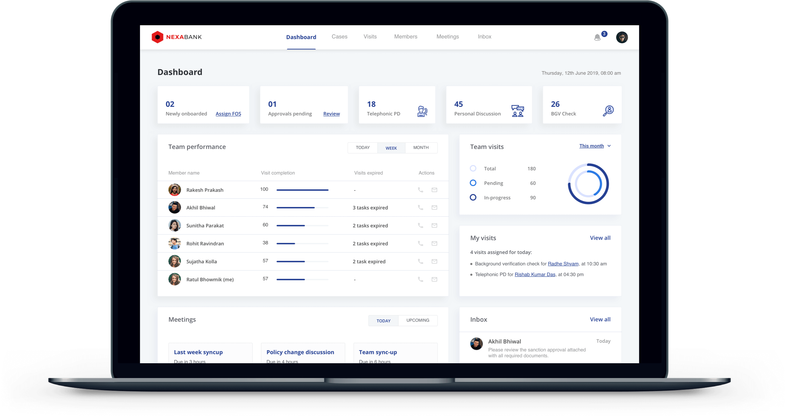
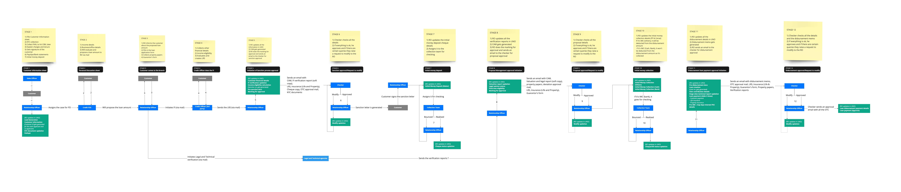
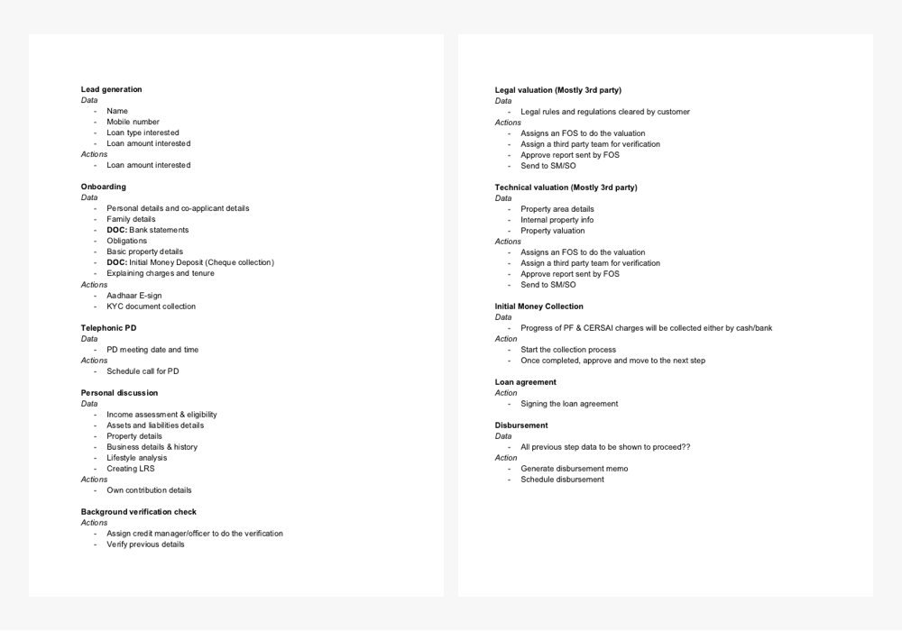
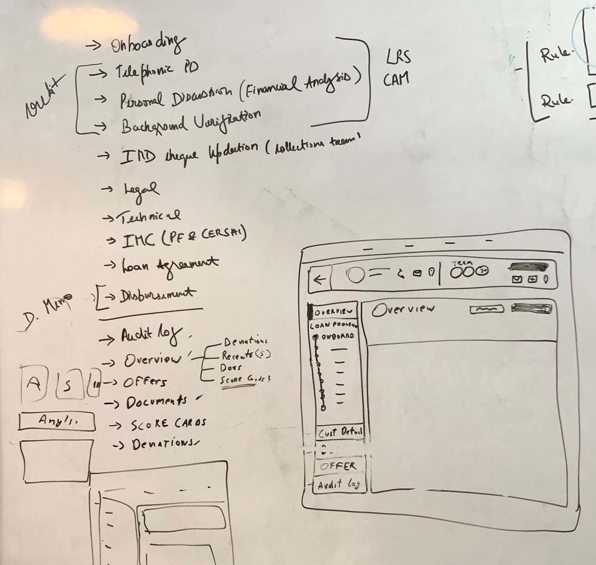
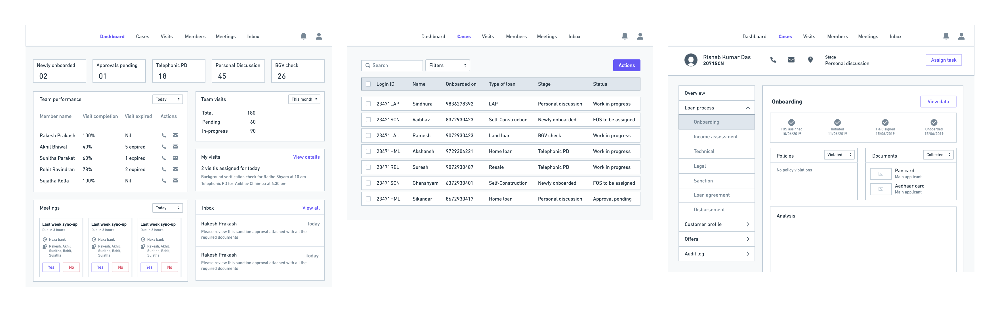
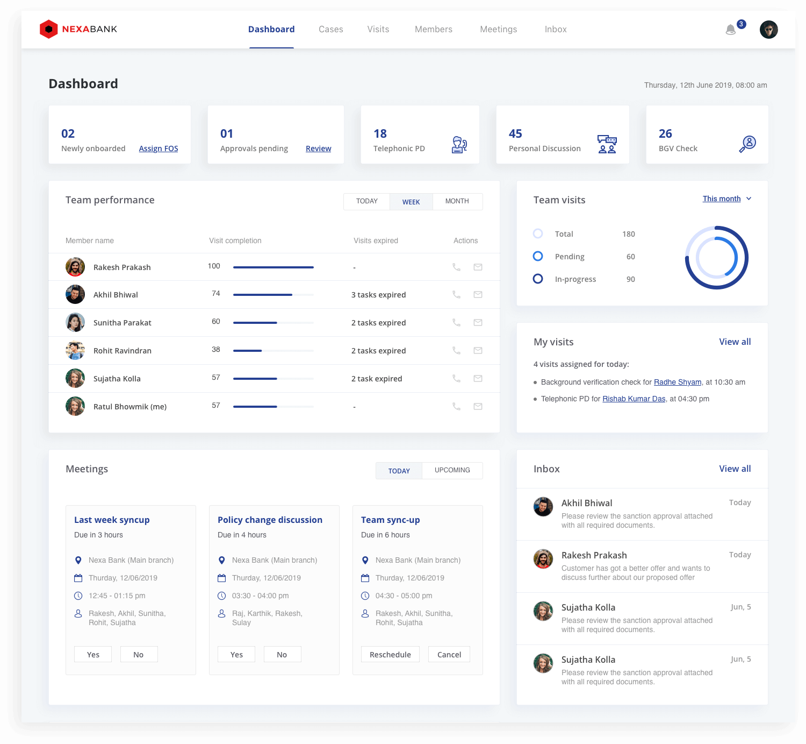
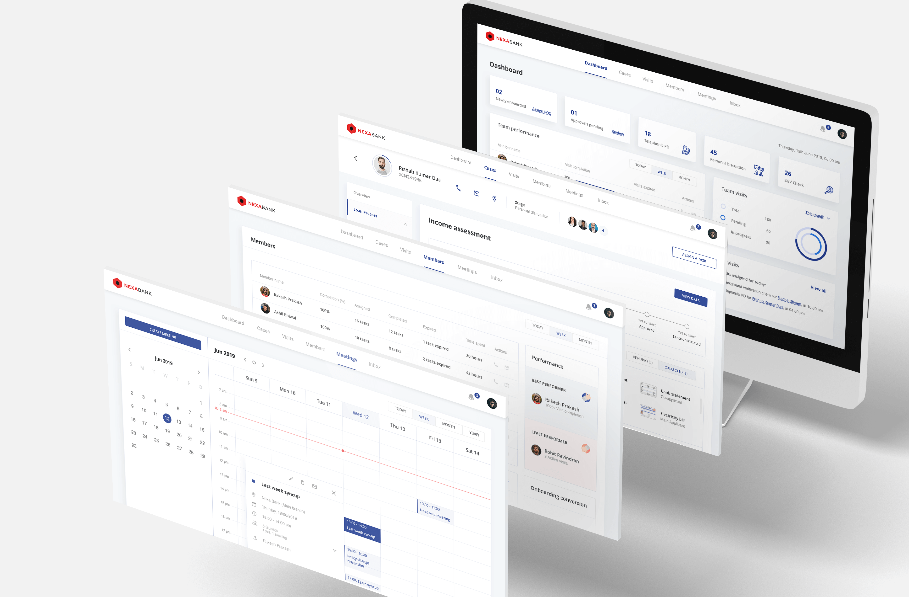
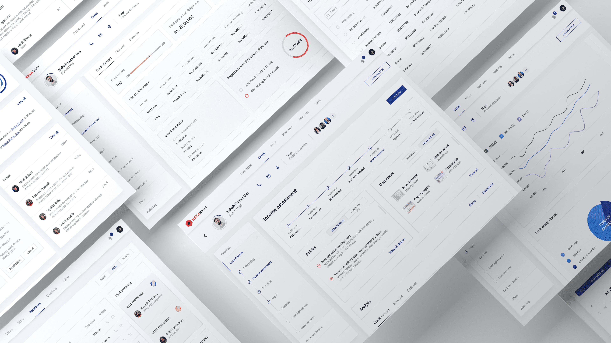

Manager Panel

BRIEF
To design a web panel for credit managers working in Financial Institutions and NBFCs. They need more visibility to be able to monitor their team and push the loan process in a much faster pace.
COMPANY / ROLE
Loktra / UI & UX
TYPE - Web panel
Problem statement
In the current lending scenario, credit is one of the most difficult pieces as this phase of the lending cycle validates the credibility of the customer. Typically credit manager’s do not have complete visibility about their team’s performance, customer’s progress and are largely dependant on whatsapp and email for communication and spreadsheets to maintain data. Thus getting an overall visibility requires a lot of manual checking which consumes a lot of their time and effort.
Target users
The target users are credit managers working in Financial Institutions and NBFC’s who typically lead a credit team with multiple credit officers reporting to them. At the end of the day their only motto is to complete the job in the shortest span and push the case to the next phase (sanction). Not every financial institution or NBFC’s structure definition will be the same, the challenge here is finding the commanaility and understanding all types of use cases and building an adaptable product accordingly.
Solution
They need a single platform which provides real time data through which they can easily monitor their team’s performance, keep an eye on customer’s progress and give & take approvals seamlessly without going through the hassle of juggling between multiple platforms.
Design process
1. Field visits & user interview
The first step is to be able to empathise the users, to do so we should understand and identify the challenges faced by them in their current process. To do so, my product manager and I went to the field to understand their current process and the pain points they face on a daily basis. We met various credit managers individually and asked them to walk us through their entire process, so that we’ll be able to get a different perspective from each one of them.
2. Understanding existing process
After going for multiple visits and interacting with different credit managers, I started to understand how they achieve their goals using the current process. With my learning, I understood that the journey was a mix of physical and digital touch points. To get a holistic view, I broke the entire lending journey according to their current process into 12 steps starting from lead generation to disbursement of the loan.
 3. Information architecture
Based on the information we collected during our research, PM and I came up with various feature sets and started prioritising them with respect different use cases. I kept all the pain points in mind while defining the information architecture. They need one platform to monitor and manage their team and achieve the targets assigned to them in the shortest span.
The parent elements that I defined are dashboard, cases, visits, members, meetings and inbox. In the dashboard, the manager will get a complete overview of his team, their performance, customer summary etc. The cases section will give all the real-time information about all the customers pertaining to different stages of the lending cycle. Visits and members section will give an overall picture to the managers about all the visits assigned and individual team members performance. Lastly, meetings section acts like an internal meetings calendar and inbox for their communication and broadcasting channel.
4. Wireframes
I started off with low-fidelity wireframing by sketching my vision of the user journey on the white board. After back and forth discussions and feedback sessions with my PM on the structure of the interface, I moved to high-fidelity wireframing.
While working on the hi-fi wireframes, I took multiple feedback sessions with the credit managers and their business head at various points and kept iterating with respect to their feedback.
5. Visual designs
I wanted to keep the interface clean and clear with less clutter. This is how the final UI of the manager dashboard looks like.
  To get in touch
Feel free to reach out to me at